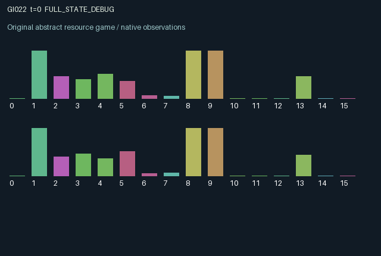

GI022 / LEGACY_ARRAY
Coupled growth patches with delayed feeding and displaced waste
2 agents5 actions16 observation columns32 original horizonRuntime: PASS
Release verification episode
Untrained uniform legal actions. Actual JAX state sampled along the full original episode; full-state debug camera. No human performance or learning claim.

Run this game
crucibles play --game 22
Start Python locally, then open the address printed by the terminal. Installation, multiplayer, takeover and keyboard controls →
Objective, rewards & ending
Exact task contract
{
"termination": "Original kernel t >= 32; see mechanism and source"
}Declared per-step reward bounds: -1.0 to 1.0. Observability: source_defined.
Rules
Original mechanism document (historical status wording retained)
# Coupled growth patches with delayed feeding and displaced waste Candidate: astra-d2-00022. This is a parentless source proposal with no supplied predecessor, score, or feedback. Each agent controls a renewable growth patch with biomass, nutrient, toxin and a local exchange valve. Action 0 waits. Action 1 harvests 45 percent of current biomass. Action 2 queues a nutrient dose. Action 3 toggles the local valve. Action 4 filters 55 percent of the current local toxin. All five actions are legal. Nutrient and toxin diffuse between patches only when both new-state valves are open. Either agent can stop or resume this common exchange. Diffusion can deliver useful nutrients or harmful toxin depending on the current concentrations. Filtering has a separate externality: 60 percent of the removed toxin is sent into the other patch's incoming waste state, arriving on its next transition irrespective of the valves. Consequently closing the exchange valve does not eliminate the effect of the other agent's filtering decision. Feeding is delayed through far and near dose states. A dose chosen now passes through both stored states before entering the nutrient transition, and also produces a small toxin increment on arrival. Growth depends on the post-exchange nutrient level relative to a private fixed nutrient affinity, on remaining biomass after harvesting, and on the toxin level. Harvesting reduces future productive stock. Background regrowth and toxin decay continue between actions, so harvest, feeding, filtration and exchange timing have persistent consequences. The nutrient affinity belongs to the acting agent and is observed only by that agent. Own patch conditions and pending own doses are current observations. The other patch's biomass, nutrient and toxin are reported with a one-transition lag; at reset the report is the actual initial state. Valve settings are public and current. The sixteen columns are time fraction, role sign, own biomass, lagged other biomass, own nutrient, lagged other nutrient, own toxin, lagged other toxin, own valve, other valve, own near dose, own far dose, own incoming waste, own nutrient affinity, own last reward and own last harvested amount. Other pending doses and affinities are not directly observed. Reward is tanh of clean-harvest revenue less feeding, valve-switching and filtration costs and a charge for current toxin. All concentrations and biomass are clipped to [0, 1], and tanh bounds the finite utility in [-1, 1]. The output at transition 32 is the preserved terminal state and both roles terminate together. This is related to familiar renewable-resource, pollution-externality and coupled-reservoir models. The proposed interaction combines a jointly controlled exchange channel, private growth optima, delayed treatment and waste displaced through a separate route. These are mathematical game dynamics, not a calibrated ecological model. No nonisomorphism, mechanism eligibility, compiler success or learning effect is asserted; isolated execution remains the experimenter's responsibility.
Commands
0Action 0; see mechanism and source
1Action 1; see mechanism and source
2Action 2; see mechanism and source
3Action 3; see mechanism and source
4Action 4; see mechanism and source
Roles & abilities
agent_0 Original legacy agent; see mechanism and source
agent_1 Original legacy agent; see mechanism and source
Observation permissions
Training receives only the original observation rows. Role cameras use declared visibility; debug cameras are explicitly marked. Local benchmark records log debug exposure and role takeover history.
Exact observation layout
[]
Entity visibility & attributes
[]
Actual verification & provenance
Per-game execution receipt
{
"game": "gi022",
"status": "PASS",
"verification_revision": 2,
"source_sha256": "fbd4418d759e70c5825a46c7fbbb5a61cd59822d738955a065efec787c089918",
"seed": 20261101,
"runtime": {
"jax": "0.4.38",
"numpy": "1.26.4",
"devices": [
"TFRT_CPU_0"
]
},
"dimensions": {
"num_agents": 2,
"observation_size": 16,
"num_actions": 5,
"max_steps": 32
},
"checks": {
"eager_reset": {
"status": "PASS",
"seconds": 0.513338565826416
},
"observation_spaces_legal_masks": {
"status": "PASS",
"seconds": 0.15633678436279297
},
"eager_step": {
"status": "PASS",
"seconds": 0.54422926902771
},
"jit_reset": {
"status": "PASS",
"seconds": 0.44748926162719727
},
"jit_step": {
"status": "PASS",
"seconds": 0.3501591682434082
},
"eager_jit_integer_parity_float_measurement": {
"status": "PASS",
"seconds": 0.0010018348693847656
},
"jit_vmap_reset": {
"status": "PASS",
"seconds": 0.4811997413635254
},
"jit_vmap_step": {
"status": "PASS",
"seconds": 0.33722805976867676
},
"outer_autoreset_api": {
"status": "PASS",
"seconds": 0.7380282878875732
},
"full_original_horizon_episode_and_render": {
"status": "PASS",
"seconds": 1.1328771114349365
}
},
"human_scores": null,
"browser_controls": "PENDING",
"failures": [],
"elapsed_seconds": 5.149040460586548,
"float_parity_max_abs": 0.0,
"numerical_parity": "EXACT",
"raw_terminal_absorbing": "NOT_PART_OF_ORIGINAL_LEGACY_CONTRACT",
"terminal_outer_reset": "PASS",
"episode_steps": 32,
"scripted_random_returns": [
0.3844620331656188,
0.5360046583227813
],
"terminal": true,
"demo_information": "FULL_STATE_DEBUG",
"demo_frames": 33,
"render_roles_checked": 2
}Chromium control verification
{
"game": "gi022",
"status": "PASS",
"human_scores": null,
"engineering": true,
"checks": [
"catalog_selected_and_real_native_reset",
"dom_queue_and_native_step",
"second_participant_ownership_and_native_joint_step",
"all_roles_individually_controllable_no_role_cap",
"explicit_debug_camera",
"release_to_pure_ai_without_reset"
],
"ui_sha256": "15b5861d23b3c42811865c954d5a988280bbfd21cf8e93754be2437a027158c5",
"seconds": 2.7681736946105957
}Original identity and file hashes
{
"id": 22,
"key": "gi022",
"title": "Coupled growth patches with delayed feeding and displaced waste",
"summary": "",
"tags": [],
"family": "legacy_array",
"dimensions": {
"num_agents": 2,
"observation_size": 16,
"num_actions": 5,
"max_steps": 32
},
"source_sha256": "fbd4418d759e70c5825a46c7fbbb5a61cd59822d738955a065efec787c089918",
"manifest_sha256": "43db416f1a096a45a1798007e764bd23222f1ae59adea703426be50dc600b6be",
"files": [
{
"file": "candidate.py",
"sha256": "fbd4418d759e70c5825a46c7fbbb5a61cd59822d738955a065efec787c089918",
"bytes": 5060,
"origin": "work/exp_2/astra_generation/discovery_v2/initial/candidate_00022/attempt_00/candidate.py"
},
{
"file": "mechanism.md",
"sha256": "87a7bc258380d67b55dc4ce70cd9bd6998050bb75798eb7009f60f7378cae353",
"bytes": 3077,
"origin": "work/exp_2/astra_generation/discovery_v2/initial/candidate_00022/attempt_00/mechanism.md"
}
],
"original_status": "LEGACY_SOURCE",
"original_saved_replay": false,
"release_validation": "PASS",
"human_scores": null,
"browser_validation": "PASS"
}